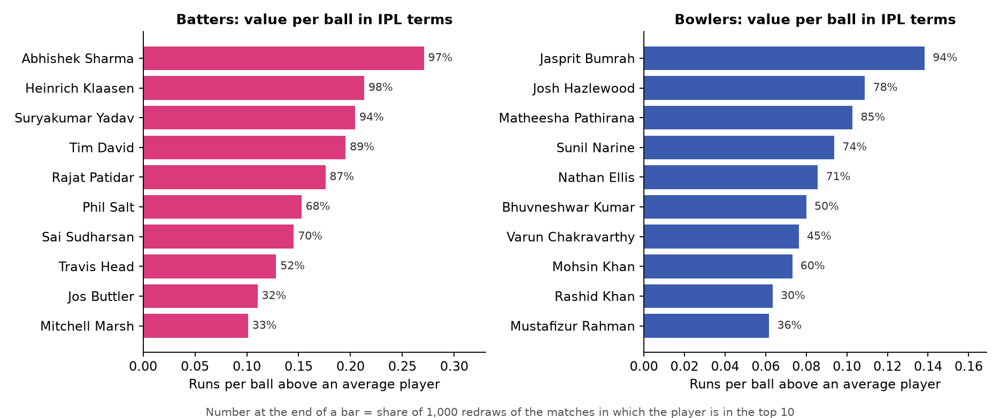
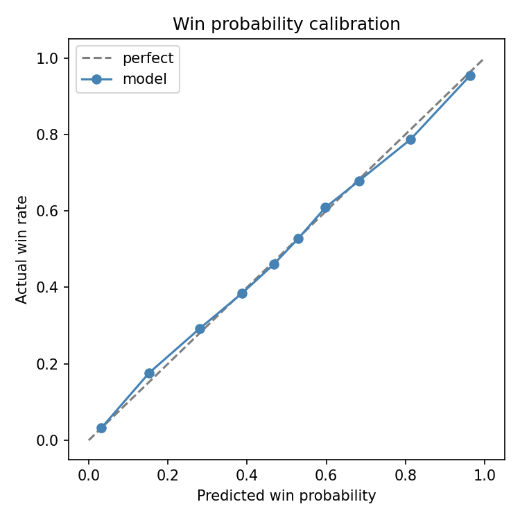
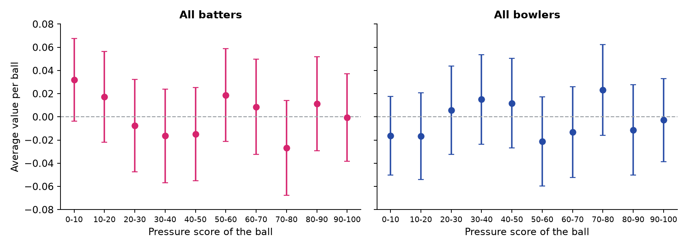
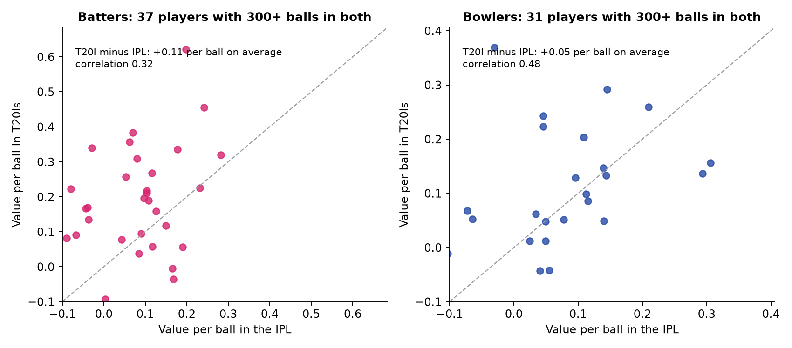
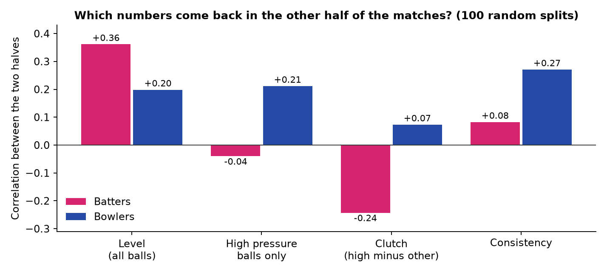
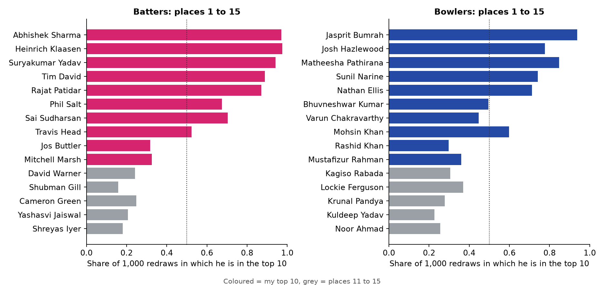
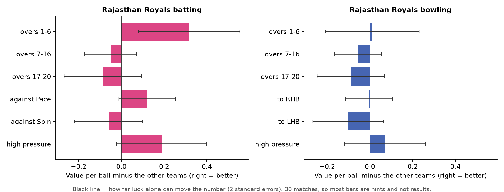
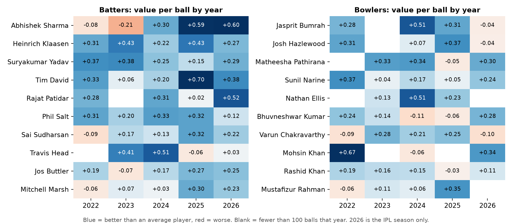

I ranked players on how much better than an average player they are, ball by ball, in the same match situation. The data is 200,961 balls from 867 matches since 2022: 367 IPL, 470 T20I and 30 other T20 matches that only helped to train the models. I rank a player on all his balls and not only the tense ones. The tense balls alone told me nothing about batters in the other half of the matches, and no more than the overall level for bowlers (section 4). I could not find a separate clutch skill in this data.

Two balls with the same score can carry very different pressure. Needing 12 off 6 balls with 8 wickets down is tense on every ball. Needing 12 off 60 balls decides nothing yet, so the score alone cannot tell the two apart. I measured pressure from the chance of winning, in three steps.
First, win probability. One LightGBM model for each innings gives the chance that the batting team wins, from the score or the runs needed, wickets in hand, balls left and the competition. I forced it to follow cricket logic: more wickets, more balls or more runs never lower the chance. I trained it on 812 clean matches in 5 groups, and every match is scored by a model that never saw it. The Brier score is 0.178 (0.250 for always saying the base rate). When the model says 70%, the team wins about 70% of the time, and the biggest gap in any of 10 buckets is 2.6 points.
Second, leverage. For each of the 8 results of the next ball (0 to 6 runs, or a wicket) I take the change in win probability and weight it by how often that result happens in that over of that innings. My first version used win chance after a four minus win chance after a wicket. It said a wicket on the first ball is worth 10.9 points, which is a guess, because almost no match reaches those states. I replaced it.
Third, the pressure score: leverage as a percentile over all balls, 0 to 100. High pressure means 80 or more, which is 19.8% of balls.

| Spot check | Average pressure |
|---|---|
| Last over of a close chase (1 to 12 needed) | 92.1 |
| First over of the first innings | 36.3 |
| One sided chase (win chance above 95% or below 5%) | 13.1 |
The scoreboard also misses some things, so I tested four: 3 or more dot balls in a row, 2 or more wickets in the last 18 balls, a batter in his first 10 balls and a knockout match. With the match state held fixed, the first three lower the runs per ball by 0.10 to 0.23 (t between 7 and 23). The knockout match changes nothing. I keep the three as flags in the data, but I do not add them to the pressure score. I cannot tell whether the cause is pressure or just a bowler on a roll or a hard pitch. As a backup I also built a plain rule based index (required rate against what the batters can manage, and how late it is). It agrees with the score only loosely, and I use it in section 4 to see whether the lists depend on my definition.
A raw strike rate or economy is unfair, because an opener and a death bowler face different situations. So every ball gets a value: what happened minus what an average player would have done in the same situation.


Clutch = a player's value on high pressure balls minus his value on his other balls. I tested whether the method can find it, and whether it is there.

So with this data I cannot say a separate clutch skill exists, for batters or for bowlers. I cannot say it does not exist either: the data only sees a clutch spread of about 0.10 runs per ball or more, which is as big as the whole spread in level. What I can say is that the best guess of how a player does on a high pressure ball is his overall level. That is why the lists are ranked on level. A player who looks great on his high pressure balls alone is mostly lucky: for batters, that number in one half does not predict it in the other (-0.04).
I built a score in one half of the matches, as w times level plus (1 - w) times the value on high pressure balls, and checked how well it predicts the high pressure value in the other half (200 tries). For batters every bit of weight on the high pressure balls makes it worse, and level alone is best in 196 of 200 tries. For bowlers a mix of 0.7 scores 0.24 against 0.22 for level alone, but the spread from split to split is 0.10 and the best weight jumps around, so I do not move off level. A mix of 0.7 would also swap 4 of the 10 bowlers, two of them players my earlier clutch estimate had put in on noise.
| Weight on level (w) | Batters | Bowlers |
|---|---|---|
| 0.0 (high pressure balls only) | -0.04 | +0.21 |
| 0.5 | +0.06 | +0.24 |
| 0.7 | +0.12 | +0.24 |
| 1.0 (level only) | +0.21 | +0.22 |
| Test | Batters: of my top 10 stay | Bowlers: of my top 10 stay |
|---|---|---|
| T20I balls adjusted to IPL terms (final order) | 10 | 10 |
| IPL balls only | 8 (Gill and Iyer in, Buttler and Marsh out) | 7 (Rabada, Boult and Prasidh in; Ellis, Rashid and Mustafizur out) |
| High pressure balls picked with the rule based index | 7 (Abhishek, Patidar and Head have fewer than 10 pressure matches under it) | 10 |
| Ball minimum 60 to 150 (batters) or 72 to 180 (bowlers), 10 pressure matches | 9 or 10 | 10 |
| 5 pressure matches instead of 10 | 8 (Sooryavanshi and Russell in) | 10 |
| 15 pressure matches instead of 10 | 7 (Klaasen, Salt and Patidar not ranked) | 9 (Ellis out, Rabada in) |
| Price of a wicket times 0 (runs only) / 0.5 / 1.5 / 2 | 7 / 8 / 8 / 7 | 7 / 9 / 8 / 7 |
| Only the seasons 2024 to 2026 / only 2025 to 2026 | 7 / 7 (Suryakumar Yadav and Head out in both) | 7 / 8 (Rashid Khan out in both) |
Over these seven changes the batters who never drop out are Abhishek Sharma, Klaasen, Tim David and Patidar. Head drops out in 4 of 7, Sudharsan and Marsh in 3, and Buttler, Salt and Suryakumar Yadav in 2. Among the bowlers Bumrah and Ellis never drop out, Rashid Khan drops out in 4 of 7, and Chakravarthy, Mohsin Khan, Narine and Mustafizur in 2. I treat the players who never drop as the firmest picks and the others as good but replaceable.

Ferguson (37% of the redraws) and Rabada (31%) are the closest bowlers outside the list, level with the 9th and 10th bowler. Among batters nobody outside is above 25%. I also show for every player the share of his pressure matches in which he beat the average player. It comes back in the other half for bowlers (0.27) and hardly for batters (0.08), so I show it but I do not put it into the score.
| # | Batter | Balls | Pressure matches | Above average in | Value per ball | In top 10 |
|---|---|---|---|---|---|---|
| 1 | Abhishek Sharma | 2,239 | 28 | 64% | +0.271 | 97% |
| 2 | Heinrich Klaasen | 1,408 | 14 | 86% | +0.213 | 98% |
| 3 | Suryakumar Yadav | 2,746 | 30 | 70% | +0.204 | 94% |
| 4 | Tim David | 1,210 | 18 | 67% | +0.195 | 89% |
| 5 | Rajat Patidar | 916 | 10 | 30% | +0.176 | 87% |
| 6 | Phil Salt | 1,628 | 15 | 93% | +0.153 | 68% |
| 7 | Sai Sudharsan | 1,674 | 24 | 50% | +0.145 | 70% |
| 8 | Travis Head | 1,120 | 17 | 82% | +0.128 | 52% |
| 9 | Jos Buttler | 2,820 | 30 | 73% | +0.110 | 32% |
| 10 | Mitchell Marsh | 1,719 | 19 | 68% | +0.101 | 33% |
| # | Bowler | Balls | Pressure matches | Above average in | Value per ball | In top 10 |
|---|---|---|---|---|---|---|
| 1 | Jasprit Bumrah | 1,780 | 25 | 52% | +0.138 | 94% |
| 2 | Josh Hazlewood | 1,515 | 22 | 77% | +0.109 | 78% |
| 3 | Matheesha Pathirana | 1,279 | 17 | 82% | +0.103 | 85% |
| 4 | Sunil Narine | 1,553 | 23 | 61% | +0.094 | 74% |
| 5 | Nathan Ellis | 959 | 13 | 46% | +0.086 | 71% |
| 6 | Bhuvneshwar Kumar | 2,314 | 31 | 42% | +0.080 | 50% |
| 7 | Varun Chakravarthy | 2,182 | 32 | 56% | +0.076 | 45% |
| 8 | Mohsin Khan | 678 | 15 | 53% | +0.073 | 60% |
| 9 | Rashid Khan | 2,780 | 32 | 50% | +0.063 | 30% |
| 10 | Mustafizur Rahman | 1,646 | 25 | 56% | +0.062 | 36% |
The data cannot tell me who the Royals keep, who reaches the auction or what anyone costs. So "fit" here means two things: where a player's own numbers are strong, and where the Royals' own numbers show room. For the second I compare the Royals in IPL 2025 and 2026 (30 matches) with the other nine teams, using the same value per ball.

Reading the chart: only the Royals' powerplay batting (+0.32, against a luck band of 0.24) is clearly more than luck. Everything else is inside the band, so it points a direction and nothing more. Batting: below the other teams in overs 7 to 16 (-0.05), overs 17 to 20 (-0.09) and against spin (-0.06). Bowling: below in overs 7 to 16 (-0.06), overs 17 to 20 (-0.09) and to left-handers (-0.10). On high pressure balls the Royals batted +0.19 above the other teams and bowled +0.07 above them, again inside the band. If those gaps are real, the best matches are middle and late overs batters who attack spin, and bowlers for overs 17 to 20 and for left-handers. If they are luck, the 20 players are still the ones with the best record against an average player.
In every row the numbers are plain averages with the balls behind them, not shrunk, so a split with fewer than about 300 balls is a hint. The by year chart after the tables shows the form of each player.
| Player | What the data says | How he could strengthen the Royals | Watch out |
|---|---|---|---|
| 1. Abhishek Sharma | Left-hand opener, strike rate 187. Overs 1 to 6: +0.44 per ball (1,501 balls). Against spin +0.61, against pace +0.29. +0.59 and +0.60 in 2025 and 2026. | An attacking left-hand opener who is best against spin. The Royals' powerplay batting is already their strength, so he adds quality at the top more than he fixes a gap. | Below zero in 2022 and 2023. His IPL balls alone give +0.20 and his T20I balls +0.62, so his value drops from 0.31 to 0.27 in IPL terms. |
| 2. Heinrich Klaasen | Middle order (usually bats 5). Overs 7 to 16: +0.36 (1,016 balls). Overs 17 to 20: +0.25. Against spin +0.56, against pace +0.14. Between +0.22 and +0.43 in every year. | A middle overs batter who attacks spin, which is where the Royals' batting is below the other teams (overs 7 to 16, and against spin). The steadiest year to year record on the list. | Only 101 balls in the powerplay, so not an opener. His T20I value (+0.08) is far below his IPL value (+0.37). |
| 3. Suryakumar Yadav | Bats 4. Overs 7 to 16: +0.35 (1,848 balls). Overs 17 to 20: +0.48 (246). Against pace +0.29 and spin +0.31. Above the average player in 70% of his 30 pressure matches. | No weak phase and no weak bowler type. He covers overs 7 to 20, the stretch where the Royals' batting is below the other teams. | +0.15 in 2025 (603 balls), +0.29 in 2026. |
| 4. Tim David | Finisher (usually bats 6). Overs 17 to 20: +0.42 (451 balls). Overs 7 to 16: +0.27. Against pace +0.37, against spin +0.28. +0.70 in 2025. | A finisher for overs 17 to 20, the phase where the Royals' batting is furthest below the other teams. | The +0.70 in 2025 lifts his average, and he had +0.06 in 2023. Only 53% of his balls are IPL balls. |
| 5. Rajat Patidar | Bats 4, all 916 balls in the IPL. Overs 7 to 16: +0.34 (656 balls). Against spin +0.47 (349 balls), against pace +0.19. +0.52 in 2026 and +0.02 in 2025. | A middle overs batter against spin, the other batting gap of the Royals. | The smallest batter sample on the list. He was above the average player in 3 of his 10 pressure matches, the lowest share of the ten batters. |
| 6. Phil Salt | Opener. Overs 1 to 6: +0.32 (972 balls). Overs 7 to 16: +0.15. Between +0.31 and +0.33 in 2022, 2024 and 2025, +0.12 in 2026. Above the average player in 14 of 15 pressure matches. | A powerplay opener. The Royals' powerplay batting is already strong, so he is cover for the top order and not a fix. | Only 44% of his balls are IPL balls, and he has 6 IPL pressure matches, just above the minimum of 5. |
| 7. Sai Sudharsan | Left-hand opener, all 1,674 balls in the IPL, strike rate 149 (the lowest of the ten). Overs 1 to 6: +0.26. Overs 7 to 16: +0.16. -0.09 in 2022 up to +0.32 in 2025 and +0.22 in 2026. 24 pressure matches. | A left-hand top order batter with a clean IPL record. His value comes from rarely getting out (once in 33 balls) more than from boundaries. | The slowest scorer of the ten. Where the Royals need power he is the least explosive choice. |
| 8. Travis Head | Left-hand opener. Overs 1 to 6: +0.36 (859 balls). Overs 7 to 16: -0.19 (258 balls). Against spin -0.11 (292 balls). +0.41 and +0.51 in 2023 and 2024, then -0.06 and +0.03 in 2025 and 2026. | A powerplay batter only. | The last two seasons are about zero, so his 2022 to 2026 average overstates what he would give in 2027. |
| 9. Jos Buttler | Opener, the most balls of the ten (2,820). No weak phase: overs 1 to 6 +0.18, overs 7 to 16 +0.15, overs 17 to 20 +0.23. +0.27 and +0.25 in 2025 and 2026. | A flexible top order batter who can bat in any phase. | His IPL balls alone give only +0.06, against +0.36 in T20Is, so he falls to 0.11 in IPL terms (he is in the top 10 in 32% of the redraws). |
| 10. Mitchell Marsh | Opener. Overs 1 to 6: +0.25 (909 balls). Against pace +0.23, against spin +0.06 (585 balls). Near zero from 2022 to 2024, then +0.30 and +0.23. | A powerplay batter who hits pace. Both are already strengths of the Royals, so he adds little to their gaps. | Only 69 balls in overs 17 to 20, so no finishing evidence. A close call: top 10 in 33% of the redraws. |
| Player | What the data says | How he could strengthen the Royals | Watch out |
|---|---|---|---|
| 1. Jasprit Bumrah | Right-arm fast. Overs 17 to 20: +0.43 (495 balls). Overs 7 to 16: +0.25. Overs 1 to 6: +0.16. Against left-handers +0.43 (542 balls), right-handers +0.19. Economy 7.18, a wicket every 20 balls. | He answers both Royals bowling gaps: overs 17 to 20 and left-handers. | Slightly below zero in 2026 (-0.04 on 474 balls). Above the average player in 52% of his 25 pressure matches. |
| 2. Josh Hazlewood | Right-arm fast-medium. Overs 1 to 6: +0.36 (808 balls). Overs 7 to 16: +0.13. Overs 17 to 20: +0.04. Against left-handers +0.31. A wicket every 15 balls. | A new ball wicket taker. The Royals' powerplay bowling is only level with the other teams (+0.01), so there is room for attack there. | Weak at the death (+0.04), economy 8.28, and slightly below zero in 2026 (-0.04). |
| 3. Matheesha Pathirana | Right-arm fast. Overs 17 to 20: +0.36 (488 balls). Overs 7 to 16: +0.16 (710). A wicket every 13.8 balls, the best of the ten, at an economy of 8.69. | A death bowler who takes wickets, aimed at the Royals' weakest bowling phase. | Slightly below zero in 2025 (-0.05) and only 109 balls in 2026. Only 81 balls in the powerplay. |
| 4. Sunil Narine | Off-spin, all 1,553 balls in the IPL. Economy 6.87, the lowest of the ten. Overs 7 to 16: +0.20 (1,243 balls). Left-handers +0.17, right-handers +0.19. | Control in the middle overs against both hands. The Royals' overs 7 to 16 bowling is below the other teams. | The fewest wickets of the ten (one per 24 balls). Overs 1 to 6: -0.06 (210 balls). |
| 5. Nathan Ellis | Right-arm medium. Overs 1 to 6: +0.52 (272 balls). Overs 7 to 16: +0.19. Overs 17 to 20: +0.07. Against left-handers +0.35. | A new ball and left-hander option, the second Royals bowling gap. | A thin IPL record: 34% of his balls, exactly the minimum of 5 IPL pressure matches, and +0.14 on IPL balls alone. Only 66 balls in 2026. |
| 6. Bhuvneshwar Kumar | Right-arm medium. Overs 1 to 6: +0.23 (1,373 balls). Overs 17 to 20: +0.11 (635). Overs 7 to 16: -0.17 (306). Left-handers +0.06, right-handers +0.19. | A new ball and death bowler, with more balls in those phases than anyone else on the list. | -0.11 in 2024 and -0.06 in 2025, +0.28 in 2026. Weak against left-handers. Above the average player in 42% of his pressure matches, the lowest of the ten bowlers. |
| 7. Varun Chakravarthy | Leg-spin. Overs 7 to 16: +0.16 (1,655 balls). Overs 1 to 6: +0.21 (361). Overs 17 to 20: -0.17 (166). Right-handers +0.19, left-handers +0.04. A wicket every 15.8 balls. | A middle overs wicket taker. | Weak against left-handers, which is where the Royals are already weak. -0.10 in 2026 (422 balls). |
| 8. Mohsin Khan | Left-arm medium-fast, all 678 balls in the IPL (the fewest of the ten). Overs 7 to 16: +0.37 (201 balls). Overs 1 to 6: +0.21 (328). Left-handers +0.31 (234 balls). | A left-arm seam option who does well against left-handers. | The smallest sample of either list. No balls in 2025, -0.06 in 2024, +0.34 in 2026. |
| 9. Rashid Khan | Leg-spin, the most balls of any bowler (2,780). Overs 7 to 16: +0.14 (2,174 balls). Left-handers +0.28, right-handers +0.02. Economy 7.41. | Middle overs control, and an answer to left-handers, the weaker side of the Royals' bowling. | His IPL balls alone give +0.05, against +0.22 in T20Is, so he is 9th in IPL terms and in the top 10 in 30% of the redraws. About zero against right-handers. |
| 10. Mustafizur Rahman | Left-arm medium. Overs 7 to 16: +0.26 (531 balls). Overs 17 to 20: +0.12 (604). Overs 1 to 6: +0.05. Left-handers +0.21, right-handers +0.12. A wicket every 20 balls. | A left-arm option for the middle and the death overs. | Only 32% of his balls are IPL balls (12 IPL pressure matches). Only 43 balls in 2026, and +0.35 in 2025. |
Putting it together: for the batting gaps, Klaasen, Suryakumar Yadav, Tim David and Patidar are the ones whose numbers are strongest in overs 7 to 20 and against spin. Abhishek Sharma, Salt, Sudharsan, Head, Buttler and Marsh are openers, which is the Royals' strength already, so they are choices for quality and depth. For the bowling gaps, Bumrah and Pathirana are the strongest in overs 17 to 20, and Bumrah, Ellis, Hazlewood, Mohsin Khan and Rashid Khan are the strongest against left-handers. Narine, Chakravarthy and Rashid Khan are the middle overs bowlers, and Narine (6.87) and Bumrah (7.18) have the best economies. Head's last two seasons and the thin IPL samples of Ellis, Mustafizur and Mohsin Khan are the biggest cautions.

The code, the notebooks and one note per step with every decision are in the repository folder. Put the six competition csv files in the project folder, then run in order:
python src/01_clean.py, python src/02_pressure.py, python src/03_expected.py, the notebooks notebooks/04_player_curves.ipynb and notebooks/05_proof.ipynb, then
python src/06_facts.py, python src/06_charts.py and python src/06_report.py. Every step is seeded, and I checked that a rerun gives the same tables.
The decisions and their reasons are in report/notes/. Tools: pandas, LightGBM, matplotlib.